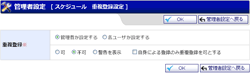

スケジュール個人週間
スケジュール 週間
スケジュール 月間
スケジュール 日間
スケジュール一覧
個人スケジュール登録
個人スケジュール編集（出欠確認しない）
個人スケジュール編集（出欠確認依頼側）
個人スケジュール編集（出欠確認回答側）
個人スケジュール確認
個人スケジュール繰り返し登録
個人スケジュール繰り返し編集
個人スケジュール繰り返し登録確認
個人スケジュール繰り返し編集確認
グループスケジュール登録
グループスケジュール編集
グループスケジュール確認
グループスケジュール繰り返し登録
グループスケジュール繰り返し編集
グループスケジュール繰り返し登録確認
グループスケジュール繰り返し編集確認
スケジュール繰り返し登録(削除)確認
グループスケジュール繰り返し登録(削除)確認
管理者設定メニュー
共有範囲設定
自動データ削除設定
手動データ削除設定
スケジュールインポート（管理者設定）
スケジュールインポート確認（管理者設定）
スケジュール初期値設定（管理者設定）
重複登録設定
ショートメール通知設定（管理者設定）
個人設定メニュー
スケジュール初期値設定
日間表示時間帯設定
グループメンバー表示設定
スケジュール一覧表示設定
ショートメール通知設定
初期表示設定
スケジュール重複登録設定
グループスケジュール表示設定
スケジュールインポート
スケジュールインポート確認
特例アクセス管理
特例アクセス登録
特例アクセス登録確認
特例アクセス編集
特例アクセス編集確認